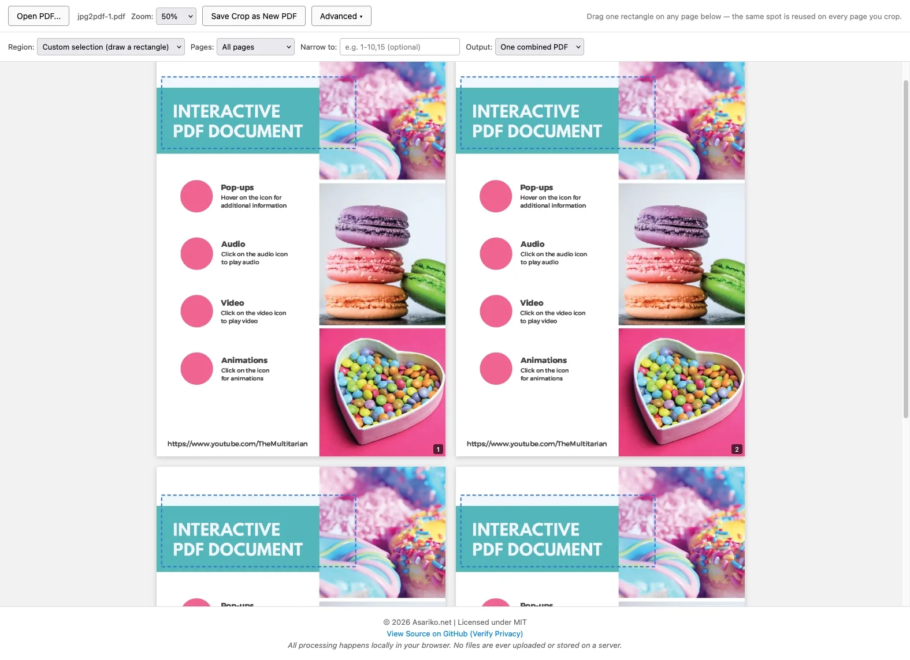

PDF Crop
Crop the same spot from many PDF pages at once, without uploading anything.
It also combines several PDFs into one.

How it works
- 1Open a PDFChoose a file or drop it on the page. It never leaves your device.
- 2Draw one boxDrag a rectangle on any page. That exact spot is reused on every page you crop, or pick Full page to skip drawing.
- 3Choose pages and saveCrop all pages, odd or even pages, or a range like 1-10,15. Save one combined PDF or separate files in a .zip.
What you can do
Same spot, every page
Draw the box once. The same position and size are cropped on every page you choose, so a header, a stamp or a figure comes out identical each time.
Odd, even or all pages
Crop only odd pages, only even pages, or every page. Handy for scanned books and two-sided documents.
Any page range
Narrow it down with a range such as 1-10,15, alone or together with odd or even.
One PDF or separate files
Get everything in one combined PDF, or each cropped page as its own file in a single .zip.
Combine PDFs
Switch to the Combine PDFs tab to join several PDFs into one file. Also free, also in your browser.
Add your PDFs
Add as many PDFs as you like, or drop them in. They line up in name order.
Arrange them
Drag the files into the order you want, or remove one with ×.
Save or keep going
Save one combined PDF, or send it straight to Crop to crop the result.
Why use it
The original page is copied byte for byte and only its visible boundary changes, so the text stays selectable and searchable. No re-encoding, no garbled characters, no surprise blank page. Everything happens inside your browser; the file is never uploaded.
- Nothing is uploaded; the file stays in your browser
- Text stays selectable and searchable
- Pages are kept as they are: no re-encoding, no blurry text
- Free and open source, no account needed
Try PDF Crop
Free · runs in your browser, nothing uploaded.
Open PDF Crop